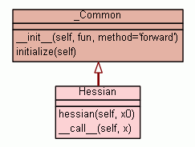

Class Hessian
source code

Estimate Hessian matrix
HESSIAN estimate the matrix of 2nd order partial derivatives of a real
valued function FUN evaluated at X0.
Assumptions
-----------
fun : SCALAR analytical function
to differentiate. fun must be a function of the vector or array x0,
but it needs not to be vectorized.
x0 : vector location
at which to differentiate fun
If x0 is an N x M array, then fun is assumed to be a function
of N*M variables.
Examples
--------
>>> import numdifftools.nd_algopy as nda
#Rosenbrock function, minimized at [1,1]
>>> rosen = lambda x : (1.-x[0])**2 + 105*(x[1]-x[0]**2)**2
>>> Hfun = nda.Hessian(rosen)
>>> h = Hfun([1, 1]) # h =[ 842 -420; -420, 210];
>>> h
array([[ 842., -420.],
[-420., 210.]])
#cos(x-y), at (0,0)
>>> cos = np.cos
>>> fun = lambda xy : cos(xy[0]-xy[1])
>>> Hfun2 = nda.Hessian(fun)
>>> h2 = Hfun2([0, 0]) # h2 = [-1 1; 1 -1]
>>> h2
array([[-1., 1.],
[ 1., -1.]])
Hfun3 = Hessian(fun, method='reverse') # TODO: Hfun3 fails in this case
h3 = Hfun3([0, 0]) # h2 = [-1, 1; 1, -1];
h3
array([[[-1., 1.],
[ 1., -1.]]])
See also
--------
Gradient,
Derivative,
Hessdiag,
Jacobian
|
|
|
|
|
|
|
Inherited from _Common:
__init__,
initialize
Inherited from object:
__delattr__,
__format__,
__getattribute__,
__hash__,
__new__,
__reduce__,
__reduce_ex__,
__repr__,
__setattr__,
__sizeof__,
__str__,
__subclasshook__
|
|
Inherited from object:
__class__
|
|
Hessian matrix i.e., array of 2nd order partial derivatives
See also derivative, gradient, hessdiag, jacobian
|